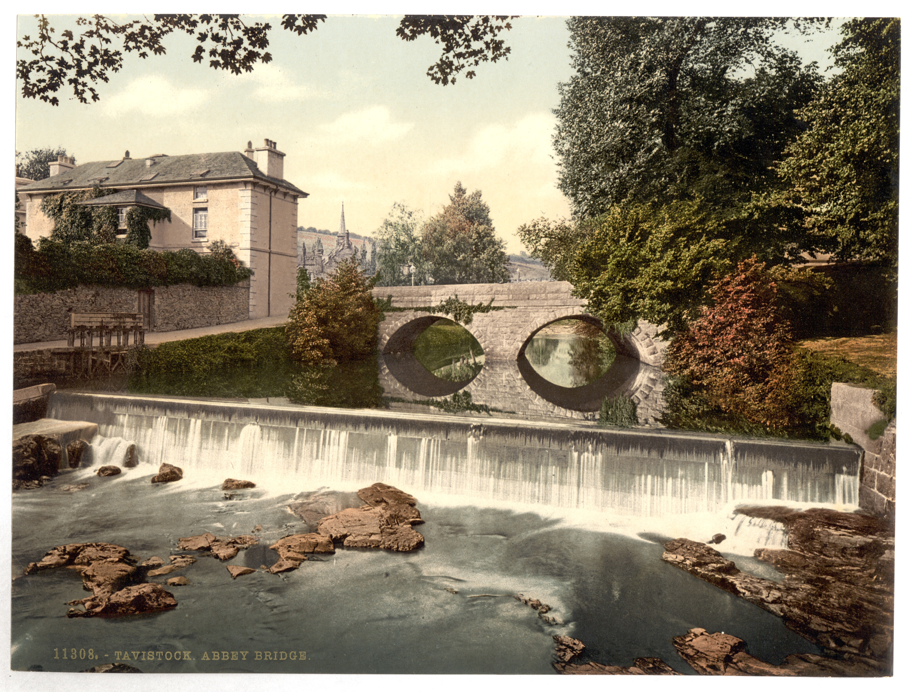

🚁 LIVING 3D WORLD DRONE ORBIT · Flying Around 3D Abbey Bridge & River Tavy (c. 1890)

1890 Archive Plate
2D → 3D ↗
Tap to replay 2D photo portal into 3D
Tavistock Abbey Bridge
c. 1890
Tavistock Living History · 2D Photo to 3D World
Living 3D Bridges, Steam Trains, Carriages, Spinning Waterwheels & 360° Drone Flight
Living 3D World Active
Building Living 3D Tavistock World…
Constructing 3D Bridges, Steam Trains, Carriages, Waterwheels & Drone Orbit